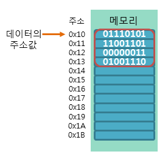
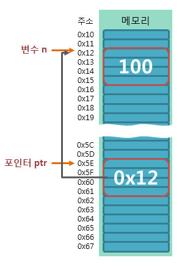
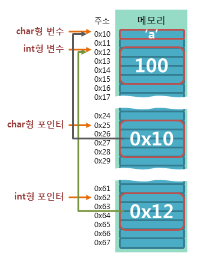

포인터의 개념
주소값의 이해
데이터의 주소값이란 해당 데이터가 저장된 메모리의 시작 주소를 의미합니다.
C언어에서는 이러한 주소값을 1바이트 크기의 메모리 공간으로 나누어 표현합니다.
예를 들어, int형 데이터는 4바이트의 크기를 가지지만, int형 데이터의 주소값은 시작 주소 1바이트만을 가리킵니다.

포인터란?
C언어에서 포인터(pointer)란 메모리의 주소값을 저장하는 변수이며, 포인터 변수라고도 부릅니다.
char형 변수가 문자를 저장하고, int형 변수가 정수를 저장하는 것처럼 포인터는 주소값을 저장합니다.
예제
int n = 100; // 변수의 선언
int *ptr = &n; // 포인터의 선언
다음 그림은 위의 예제에서 사용된 변수와 포인터가 메모리에서 어떻게 저장되는지를 보여주는 예제입니다.

포인터 연산자
C언어에서 포인터와 연관되어 사용되는 연산자는 다음과 같습니다.
1. 주소 연산자(&)
2. 참조 연산자(*)
주소 연산자(&)
주소 연산자는 변수의 이름 앞에 사용하여, 해당 변수의 주소값을 반환합니다.
'&'기호는 앰퍼샌드(ampersand)라고 읽으며, 번지 연산자라고도 불립니다.
참조 연산자(*)
참조 연산자는 포인터의 이름이나 주소 앞에 사용하여, 포인터에 가리키는 주소에 저장된 값을 반환합니다.
C언어에서 '*'기호는 사용하는 위치에 따라 다양한 용도로 사용됩니다.
이항 연산자로 사용하면 곱셈 연산으로 사용되며, 포인터의 선언 시나 메모리에 접근할 때도 사용됩니다.
포인터의 선언
C언어에서 포인터는 다음 문법에 따라 선언합니다.
문법
타입* 포인터이름;
타입이란 포인터가 가리키고자 하는 변수의 타입을 명시합니다.
포인터 이름은 포인터가 선언된 후에 포인터에 접근하기 위해 사용됩니다.
포인터를 선언한 후 참조 연산자(*)를 사용하기 전에 포인터는 반드시 먼저 초기화되어야 합니다.
그렇지 않으면 의도하지 않은 메모리의 값을 변경하게 되기 때문입니다.
따라서 C 컴파일러는 초기화하지 않은 포인터에 참조 연산자를 사용하면 오류를 발생시킵니다.
따라서 다음과 같이 포인터의 선언과 동시에 초기화를 함께 하는 것이 좋습니다.
문법
타입* 포인터이름 = &변수이름;
또는
타입* 포인터이름 = 주소값;
포인터의 참조
C언어에서 선언된 포인터는 참조 연산자(*)를 사용하여 참조할 수 있습니다.
다음 예제는 포인터의 주소값과 함께 포인터가 가리키고 있는 주소값의 데이터를 참조하는 예제입니다.
예제
int x = 7; // 변수의 선언
int *ptr = &x; // 포인터의 선언
int *pptr = &ptr; // 포인터의 참조

예제
int num01 = 1234;
double num02 = 3.14;
int* ptr_num01 = &num01;
double* ptr_num02 = &num02;
① printf("포인터의 크기는 %d입니다.\n", sizeof(ptr_num01));
② printf("포인터 ptr_num01이 가리키고 있는 주소값은 %#x입니다.\n", ptr_num01);
③ printf("포인터 ptr_num02가 가리키고 있는 주소값은 %#x입니다.\n", ptr_num02);
printf("포인터 ptr_num01이 가리키고 있는 주소에 저장된 값은 %d입니다.\n", *ptr_num01);
printf("포인터 ptr_num02가 가리키고 있는 주소에 저장된 값은 %f입니다.\n", *ptr_num02);
실행 결과
포인터의 크기는 8입니다.
포인터 ptr_num01이 가리키고 있는 주소값은 0x7c255e4입니다.
포인터 ptr_num02가 가리키고 있는 주소값은 0x7c255e8입니다.
포인터 ptr_num01이 가리키고 있는 주소에 저장된 값은 1234입니다.
포인터 ptr_num02가 가리키고 있는 주소에 저장된 값은 3.140000입니다.
위 예제의 ①번 라인에서는 sizeof 연산자를 사용하여 포인터 변수의 크기를 구하고 있습니다.
포인터 변수는 메모리에서 변수의 위치를 나타내는 주소를 다루는 변수이므로, 그 크기는 일반적으로 CPU에 따라 결정됩니다.
따라서 32비트 CPU에서는 1워드(word)의 크기가 4바이트이므로, 포인터 변수의 크기 또한 4바이트가 될 것입니다.
하지만 이러한 포인터 변수의 크기는 컴파일러로 컴파일할 때 그 크기까지 직접 명시할 수 있습니다.
따라서 포인터 변수의 크기는 CPU의 종류와 컴파일할 때 사용된 컴파일러의 정책에 따라서 달라질 수 있습니다.
또한, ②번과 ③번 라인에서처럼 포인터가 가리키는 변수의 타입에 따라 포인터의 타입도 같이 바꿔주고 있습니다.
포인터의 타입은 참조 연산자를 통해 값을 참조할 때, 참조할 메모리의 크기를 알려주는 역할을 하기 때문입니다.
다음 그림은 char형 포인터와 int형 포인터가 각각 메모리 상에서 해당 타입의 변수를 가리키는 것을 보여줍니다.

1바이트는 8비트이므로 32비트 시스템에서는 32비트 / 8비트 = 4, 즉 4바이트가 1워드(word)로 처리됩니다.
64비트 시스템에서는 64비트 / 8비트 = 8, 즉 8바이트가 1워드(word)로 처리됩니다.